Overview
This tutorial will guide you through the initial steps in getting your audio from FMOD Studio to work with CRYENGINE using CRYENGINE's audio system.
Initial steps with FMOD Studio in CRYENGINE
Setting up FMOD Studio in CRYENGINE
Enable the FMOD middleware in CRYENGINE's Console by setting the s_ImplName CVar to CryAudioImplFmod. As an alternative add following line to your system.cfg or user.cfg file (located in the root folder of the CRYENGINE):
s_ImplName = CryAudioImplFmod
FMOD Studio Project and Soundbank Locations
When using FMOD Studio with CRYENGINE, you can locate the FMOD Studio specific data in the following locations:
`Soundbanks:
<project folder>/assets/audio/fmodIn release 5.5 the location for Soundbanks changed to \<project folder>\<project assets folder>\audio\fmod\assets, where <project assets folder> refers to the assets folder set in the project's .cryproject file.
- FMOD Studio Project:
<project folder>/assets/audio/fmod_project
You can select a different path for your FMOD Studio project by going to Edit -> Preferences in the Audio Controls Editor. You can then type the desired path or browse for the folder with the Browse button:
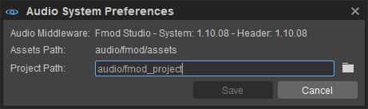
By default, CRYENGINE checks these folders to locate all the FMOD Studio Controls and Soundbanks and displays those files in the Audio Controls Editor.
When you ship your game, make sure you include only the Soundbanks in the game folder as they contain all data from the FMOD Studio Project.
Verifying the Supported FMOD Studio Version
Before you set up your FMOD Studio Project, make sure that you are using the correct version of FMOD Studio with CRYENGINE. The CRYENGINE is always updated to support the latest version of FMOD Studio.
To make sure that you are using the correct version, open the Console in CRYENGINE, and then set s_DrawDebug to a non-zero value. Now, you can see (in the top left hand corner) the current version of FMOD Studio that is supported by the audio system in your CRYENGINE build.
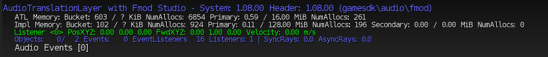
You can download the latest FMOD Studio version from here.
Creating an Audio Setup for CRYENGINE in FMOD Studio
If you are new to FMOD Studio, we recommend that you read the FMOD Studio manual. You can also visit the FMOD support page here.
Creating a Sound Event in FMOD Studio
In FMOD Studio, you can import audio into the Event Editor by dragging and dropping the file or by using the Import option (File->Import Audio Files).
After you import an audio file in *.wav format, FMOD Studio will create a new sound event for it.
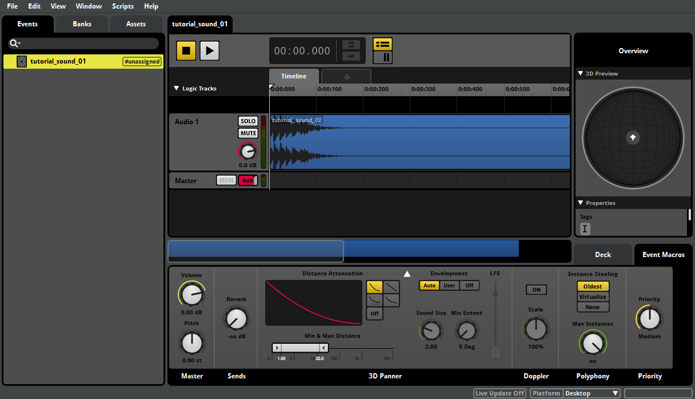
For each sound event in FMOD Studio, you can adjust multiple settings in the Deck area below the Timeline section. In the Deck area, you can change settings including the Volume, Pitch, Low/High-Pass Filtering and Positioning of the sound.
Creating a Soundbank in FMOD Studio
To integrate a new event into your game, you need to create a Soundbank in FMOD Studio that can be loaded by CRYENGINE.
In FMOD Studio, select the Bank tab in the Event Editor, and then right-click to create a new bank.
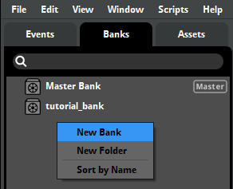
Now you can populate the Soundbank with the audio content that you have created. In the Event tab, right-click on the sound event (selecting multiple events is possible) and choose Assign to Bank (see below). You can also assign the sound events directly to a new bank.
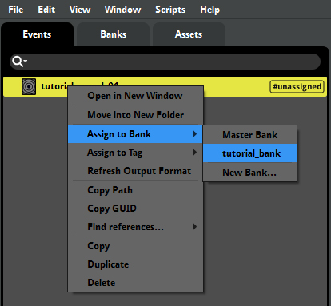
Make sure that the Soundbanks are located in the below mentioned location in order to be detected by the Audio Controls Editor:
<ProjectFolder>/assets/audio/fmod
Streaming Assets
If you want to use streaming, go to Preferences -> Build and select Build metadata, non-streaming assets, and streaming assets to separate banks:
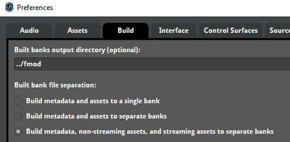
This will build the following banks:
- <bankname>.bank (contains meta data)
- <bankname>.assets.bank (contains non-streamed assets)
- <bankname>.streams.bank (contains streamed assets)
The .bank file needs to be preloaded via an ACE Preload Request in order for the streamed assets to be played,
Automatically Generating Soundbanks
You can set up FMOD Studio to automatically generate the Soundbanks in the correct location by adjusting the bank directories in Edit -> Preferences -> Build.
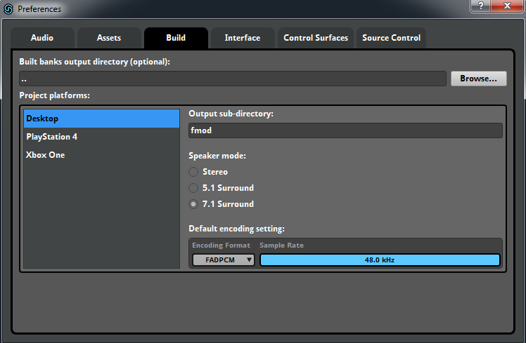
Now that you have created the setup in Fmod Studio, the Audio Controls Editor will be able to recognize the FMOD Studio Controls and Soundbanks. You can open CRYENGINE and select the Audio Controls Editor under the Tools menu.
Connecting Fmod Studio Controls to CRYENGINE's Audio System
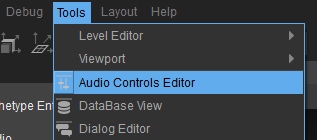
Now the Audio Controls Editor lists all the FMOD Studio Controls contained in your FMOD Studio Project and your generated Soundbanks.
You can now connect them to the audio system in order to integrate them into your level in CRYENGINE. You need to create a new folder in the Audio Controls Editor by selecting the +Add button and select Folder from the drop-down list.
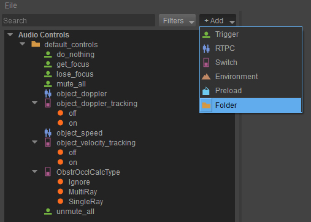
After the folder has been created, you can simply drag and drop the FMOD Studio Controls into the new folder on the audio system Controls side. CRYENGINE will automatically create the corresponding connected audio system Controls and name them after their FMOD Studio counterparts.
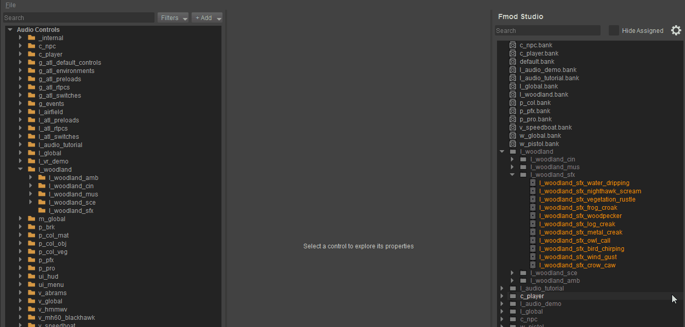
You will see that two types of audio system Controls have been created, a Trigger and a Preload. The Trigger will be used to call the FMOD Studio Event in your game while the Preload will be used to load the FMOC Studio Soundbanks so that all data related to the event is included in memory.
CRYENGINE requires the FMOD Studio Soundbank that contains your event data to be loaded in order to play sound in your level. Therefore, make sure to connect your FMOD Studio Soundbanks to audio system Preloads and update them while adding new content in FMOD Studio.
On the audio system Preload, make sure that the Auto-Load checkbox is activated and leave the Context on Global for now. You can read more about using Contexts in the Audio Controls Editor here.
Placing an Audio System Trigger in the Game
If you have followed the above steps, you can now select your audio system trigger in the editor and play it back on an Audio Entity. You can pre-listen to your audio system Triggers in the Audio Controls Editor by right-clicking on it and selecting Execute Trigger.
In order to listen to your sound in the game, you need to place an audio entity in the Level which executes the audio Trigger during game play.
For each level, it is recommended to first create a dedicated audio layer which contains your audio data. To enable this, select Tools-> Level Editor-> Level Explorer, and then select File-> New Layer to create a new layer and rename it as Audio.
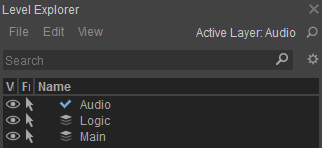
As long as the Audio Layer is selected all entities that you place in the level will be included in this layer. Now go back to the Create Object, and select the Audio Trigger Spot entity in the Audio tab and place the entity in the level.
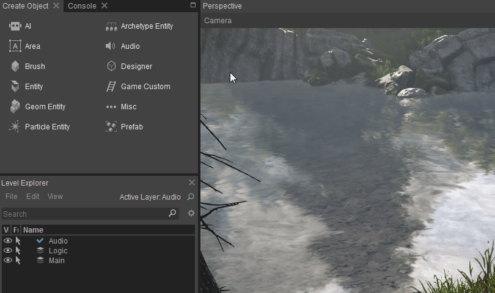
It is recommended to name your audio entities with abbreviations to improve readability in large projects. For the Audio Trigger Spot, you can use ATS abbreviation. Therefore, a frog idle sound could be called ATS_frog_idle on the Audio Trigger Spot in the Level.
If you have followed the above steps correctly, you can now select your created audio system Trigger in the Properties tab of the Audio Trigger Spot. It will be played back as soon as the Audio Trigger Spot Entity is enabled.
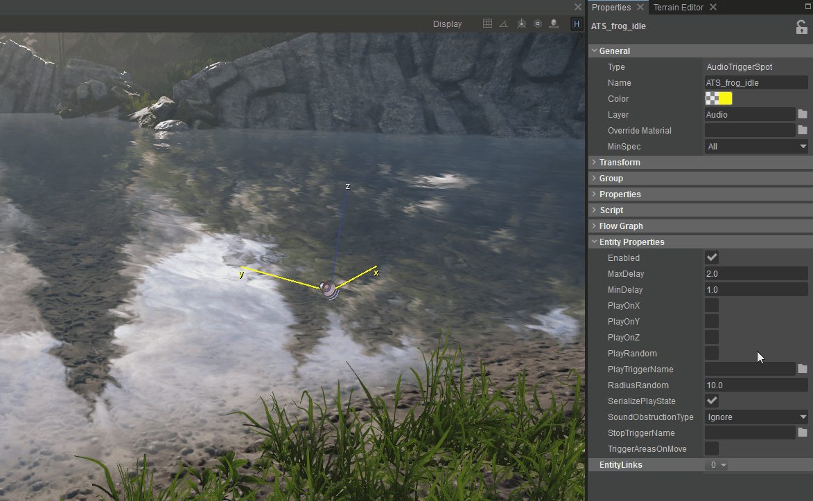
When a StopTrigger is executed and the StopTriggerName is left empty, CRYENGINE will automatically stop the FMOD Studio event from playing. This is important to remember as the behavior is same in all places in CRYENGINE where a StopTrigger can be used.
If you want to fade out a sound, you need to create an AHDSR Modulation for the volume in FMOD Studio and add a StopTrigger in the Audio Controls Editor. The AHDSR Modulation is also used to create fade-ins.
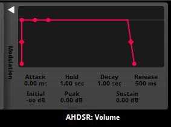
When you select a connection in the Connected Controls window, you can choose if the sound should be started or stopped using the Action drop-down option.
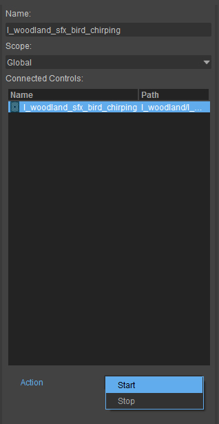
For more information, take a look at the functionality of the Audio Trigger Spot in combination with FMOD Studio here.